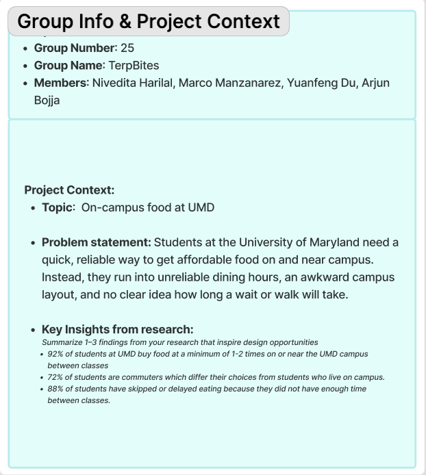
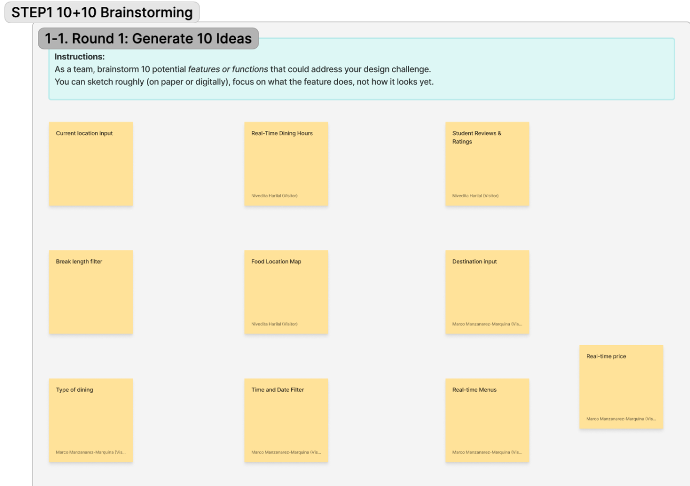
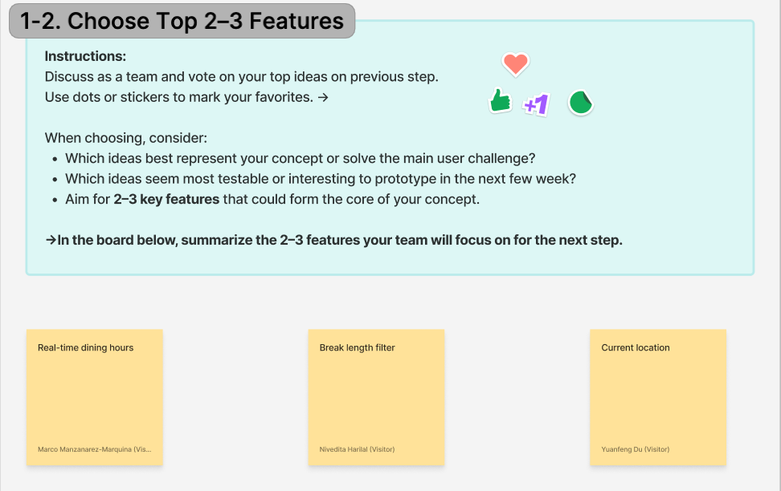
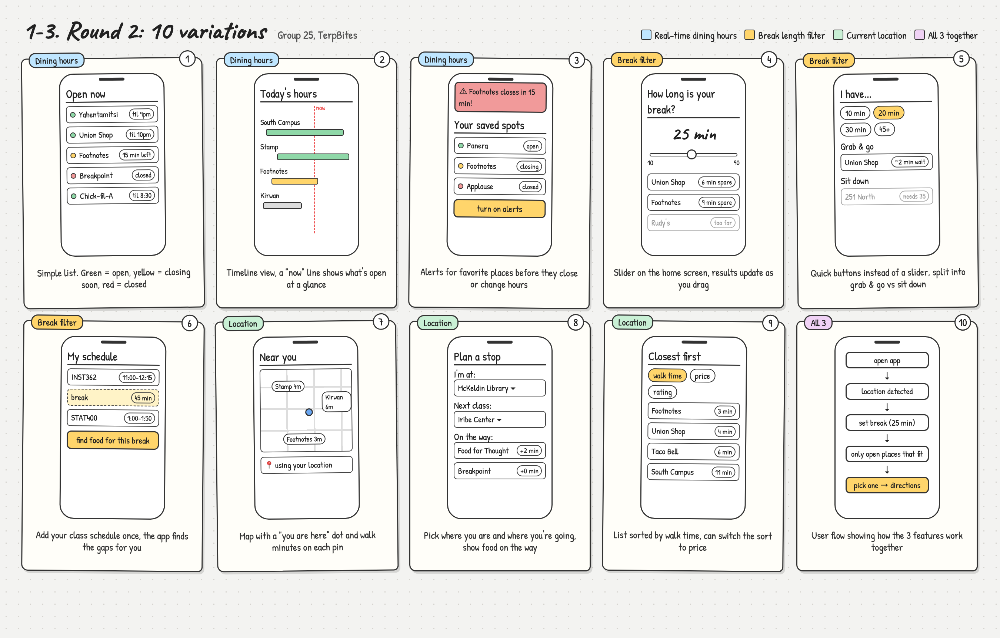
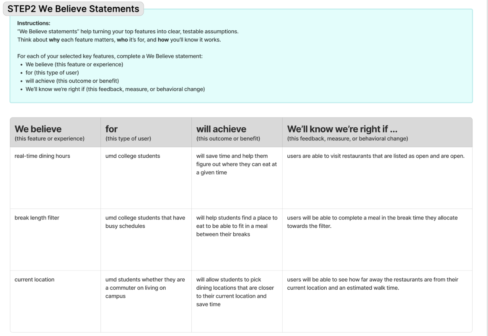

10+10 Brainstorming & We Believe Statements
Brainstorming
How we went from our design challenge to 10 feature ideas, picked our top 3, sketched 10 variations of them, and turned them into testable We Believe statements.
Our process
As a group, we accomplished the 10+10 exercise using a FigJam board. To begin with, we captured our design challenge according to our problem statement and combined the outcomes from our survey. Next, we came up with ten potential solutions to the design challenge and focused on describing what each solution would provide as opposed to its appearance.
Then, we discussed our ideas and had an exercise where we voted for our top 3 solutions by placing stickers, namely: dining hours in real time, break length filter, and the location we are at. After obtaining all votes on the ideas, we sketched several variations of our top 3 solutions, depicting them in terms of both screen layouts and user flow. Finally, we formed We Believe statements for each of our ideas so that we could check them in terms of validity.
10+10 brainstorming
Click any image to see it full size.
-
1
The design challenge
Students at UMD want an efficient and dependable means to access cheap food both on and around campus, though they face difficulty due to poor dining hours, an inconvenient campus layout, and no idea of how long it will take to get food. Our survey supports this claim: most learners buy meals between classes, most learners are commuters, and 87% of learners have failed to get meals in time.

Our design challenge and key insights -
2
10 initial ideas
We came up with 10 features: location input feature, a dining hours feature which will enable real-time usage, student reviews and ratings, a break filter option, a food location map, a destination input feature, food type and kind of dining feature, a time filter, a date filter, and a menu and price feature.

Round 1: our 10 initial ideas -
3
Our chosen features
After casting our votes, we made our choices for which real-time hours our dining options would be available, how long a break we wanted to take, and where we were. All three questions that a student needs to answer while looking for a meal during a short break are included here.

Our top 3 features after voting



We Believe statements
For each feature, we wrote what we believe it will do, who it's for, what it will achieve, and how we'll know we're right.


Summary
Core features: In the future, TerpBites will concentrate on three attributes, such as real-time dining hour availability, the break length filter, and a student's current location, which will cover different parts of the issue, being most effective when combined together.
Why we chose them: The choice of these features has been made solely based on our research findings. According to our survey that covered 12 students, there are 87% of respondents who state that they either have skipped or have delayed meals due to insufficient time, which provided us with the idea of using a break length filter so as to demonstrate only relevant options. Almost half of respondents reported arriving somewhere where food was unexpectedly unavailable, which can be eliminated using real-time hours. Distance has turned out to be the key element when it comes to making decisions regarding the dining options chosen, with the majority of students willing to walk only 5 to 9 minutes maximum, which signifies the importance of realizing location for the idea realization.
Next steps: Variation 10 shows how the features can be combined and used together, ready to implement the flow where the app will determine your current location, the time you have, and which places will be available. The next step would be to convert the most efficient variations into a clickable prototype for testing purposes with the students and to check our We Believe statements.